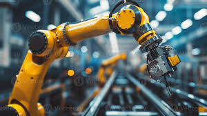
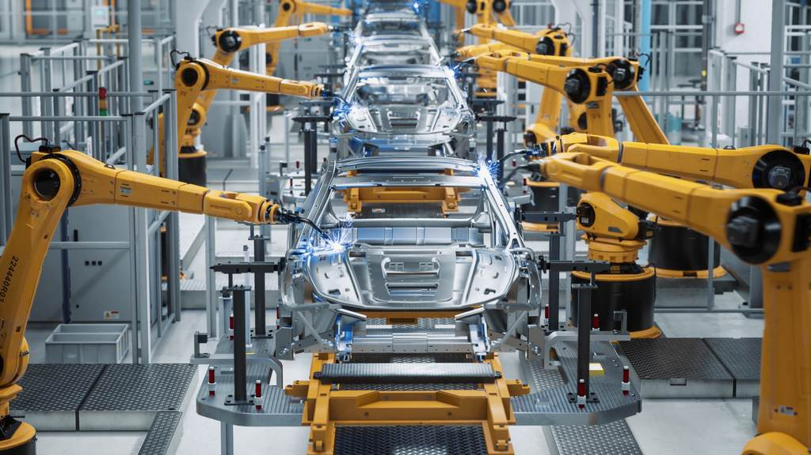
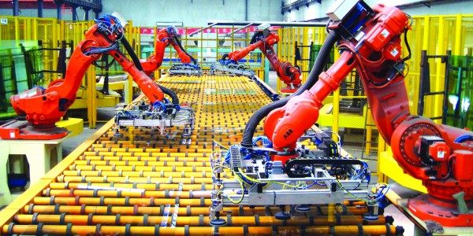
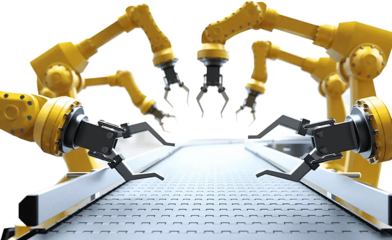
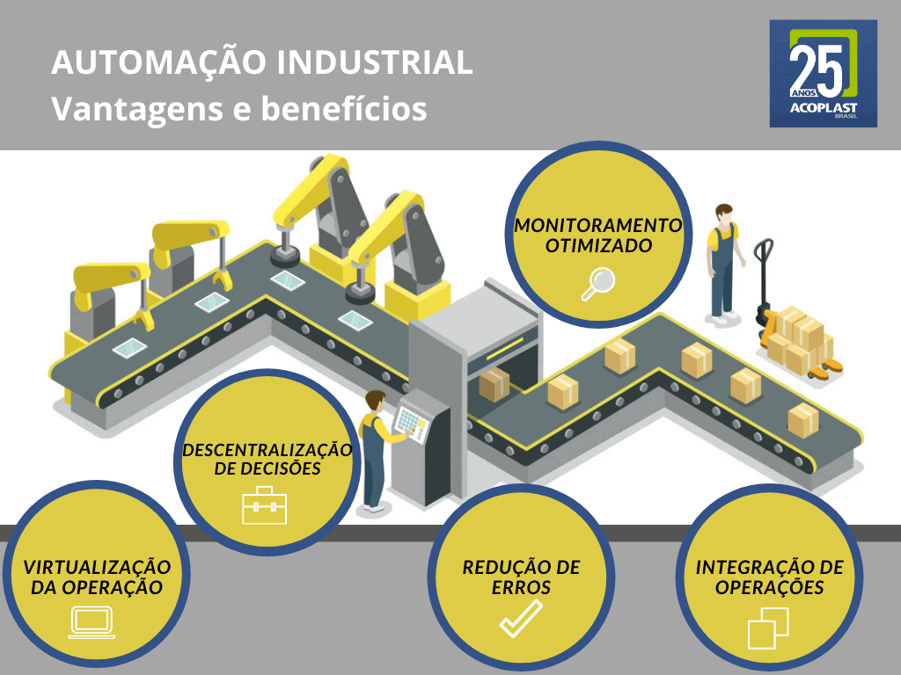

Robótica na Indústria: Automação e Fabricação
Como a robótica transforma a produção industrial
Introdução
A Robótica industrial faz uso de robôs para realizar tarefas repetitivas e de precisão em ambientes industriais.
Objetivo: Aumentar produtividade, qualidade e segurança.
Exemplos: Soldagem, montagem, pintura, movimentação de materiais, inspeção de qualidade
Histórico
Revolução Industrial
A partir do século XVIII, a Revolução Industrial trouxe máquinas a vapor e equipamentos que aumentaram a produtividade. Contudo, a automação ainda era limitada, com grande dependência do controle humano.
Início do Século XX
O uso de sistemas de controle automático, como os cartões perfurados de Jacquard, possibilitou padrões mais sofisticados, pavimentando o caminho para os sistemas de controle automático na indústria.
Anos 1950-60
Com o surgimento do Unimate, o primeiro robô industrial, a robótica começou a ser usada para automação fabril, especialmente em tarefas perigosas e repetitivas, como na indústria automotiva.
Anos 1970-80
Robôs industriais mais avançados foram adotados, aumentando a precisão e a flexibilidade da automação na produção e reduzindo custos, enquanto aumentavam a qualidade dos processos.
Indústria 4.0 e IA
Com a Indústria 4.0, robôs inteligentes e conectados foram introduzidos, junto aos Cobots, que trabalham ao lado dos humanos, aumentando a segurança, a personalização e a eficiência.
Automação Industrial
- O que é Automação?
Sistema onde máquinas e tecnologia realizam processos sem intervenção humana. -
Benefícios:
Redução de erros, velocidade na produção e redução de custos operacionais.

Tipos de robôs na indústria
Exemplos de robôs na indústria
Robôs Articulados
Exemplos de robôs na indústria
Robôs SCARA
Exemplos de robôs na indústria
Cobots (Robôs Colaborativos)
Robôs Articulados
Robôs articulados são equipamentos com múltiplas juntas, semelhantes aos braços humanos, que permitem maior flexibilidade e amplitude de movimento.
- Flexibilidade: Eles possuem vários eixos de rotação, que podem variar de 4 a 7, permitindo movimentos precisos e complexos.
- Aplicações: Utilizados em montagem, soldagem, pintura, e manipulação de materiais devido à sua alta precisão e alcance.
- Benefícios: Aumentam a eficiência e segurança, substituindo o trabalho humano em ambientes perigosos ou repetitivos. 
Robôs SCARA
Cobots (Robôs Colaborativos)
Os Cobots são robôs projetados para trabalhar em colaboração com humanos, ao invés de operar de forma isolada em ambientes industriais. Eles têm características que garantem a segurança dos trabalhadores, permitindo que sejam utilizados em conjunto com as pessoas nas linhas de produção.
- Segurança: Equipados com sensores para detectar a presença humana e evitar acidentes.
- Flexibilidade: Podem ser facilmente programados para executar diferentes tarefas.
- Eficiência: Ajudam a aumentar a produtividade ao realizar tarefas repetitivas, permitindo que os humanos se concentrem em atividades mais complexas.
- Fácil integração: Podem ser integrados em sistemas existentes sem a necessidade de modificações extensivas.
Robôs Vs Cobots

Benefícios da Robótica na Fabricação
- Aumento da produtividade
- Consistência e alta qualidade dos produtos
- Operação contínua (24/7)
- Segurança para trabalhadores
Principais Benefícios:
Vantagens da Automação Industrial
Desafios da Implementação Robótica
A adoção de tecnologias robóticas na indústria apresenta uma série de desafios que as empresas precisam enfrentar para garantir uma integração bem-sucedida.
- Custo Inicial: A aquisição e instalação de robôs podem representar um investimento significativo.
- Treinamento: Funcionários precisam ser treinados para operar e interagir com os robôs, o que pode levar tempo e recursos.
- Manutenção: Manter os sistemas robóticos funcionando adequadamente requer um plano de manutenção e suporte técnico.
- Integração: Integrar robôs a sistemas e processos existentes pode ser complexo, exigindo planejamento e personalização.
- Resistência Cultural: A resistência à mudança por parte dos funcionários pode dificultar a adoção de novas tecnologias.
Impacto na Força de Trabalho
A implementação de robôs e automação na indústria traz impactos significativos na força de trabalho, afetando tanto as funções quanto as habilidades requeridas dos trabalhadores.
- Substituição de Empregos: Algumas funções tradicionais podem ser automatizadas, levando à redução de postos de trabalho.
- Criação de Novos Empregos: Novas funções emergem, especialmente em programação, manutenção e supervisão de robôs.
- Requalificação: Os trabalhadores precisarão desenvolver novas habilidades para se adaptarem às tecnologias em evolução.
- Segurança no Trabalho: Robôs podem assumir tarefas perigosas, reduzindo o risco de acidentes para os trabalhadores humanos.
- Trabalho Colaborativo: A interação entre humanos e robôs (cobots) está se tornando mais comum, exigindo uma nova abordagem no local de trabalho.
Robótica e Indústria 4.0
A Indústria 4.0 representa a quarta revolução industrial, caracterizada pela integração de tecnologias digitais, robótica e automação nos processos de fabricação. Os robôs desempenham um papel central nessa transformação.

Robótica e Indústria 4.0
- Integração de Sistemas: Robôs conectados à Internet das Coisas (IoT) permitem a comunicação em tempo real entre máquinas, aumentando a eficiência.
- Inteligência Artificial: Robôs com IA são capazes de aprender e se adaptar a novas situações, otimizando processos de produção.
- Flexibilidade: Robôs colaborativos (cobots) trabalham ao lado de humanos, permitindo uma produção mais adaptativa e personalizada.
- Manutenção Preditiva: Sensores em robôs monitoram seu desempenho, prevendo falhas e reduzindo o tempo de inatividade.
- Melhoria da Qualidade: Robôs garantem precisão e consistência na produção, resultando em produtos de maior qualidade.
Considerações Finais
A robótica está moldando o futuro da indústria, trazendo melhorias significativas em eficiência, qualidade e segurança. A automação robótica não apenas otimiza processos, mas também redefine o papel dos trabalhadores e a dinâmica do ambiente de trabalho.
- Inovação Contínua: O avanço tecnológico em robótica é constante, impulsionando novas aplicações e melhorando as existentes.
- Adaptação Necessária: Empresas devem se adaptar às novas tecnologias para permanecer competitivas e relevantes no mercado.
- Capacitação da Força de Trabalho: É essencial investir em treinamento e desenvolvimento de habilidades para que os trabalhadores possam coexistir e colaborar com as máquinas.
- Ética e Responsabilidade: A implementação de robôs deve considerar implicações éticas e sociais, garantindo que a tecnologia beneficie a todos.
- Futuro Promissor: A robótica, aliada a outras tecnologias emergentes, promete revolucionar não apenas a indústria, mas a sociedade como um todo.